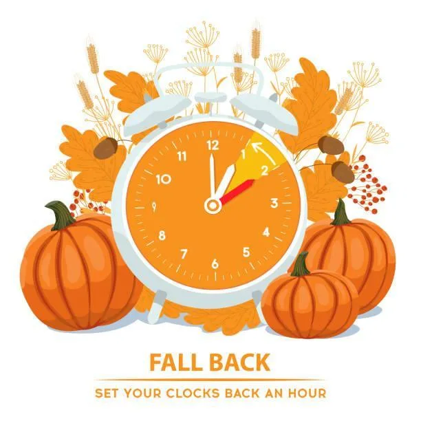
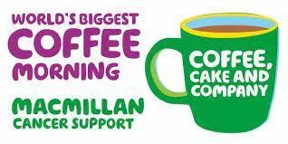
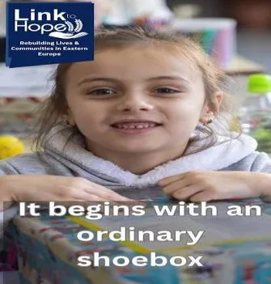
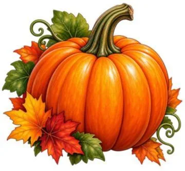

Weekly edition
Last Sunday after Trinity
Download original PDFThis Sunday
8am
BCP Holy Communion
Westhumble Chapel
10am
Holy Communion
St Michael’s Church
Today’s readings
1 Timothy 6.2b–10 & Matthew 6.19–24
The Collect for today
Merciful God, teach us to be faithful in change and uncertainty, that trusting in your word and obeying your will we may enter the unfailing joy of Jesus Christ our Lord. Amen.
Worship together
Join us online
If you are zooming, please try and join at least five minutes before the service is due to start.
Join Sunday’s serviceMeeting ID: 812 6812 6840
Passcode: 221883
Join by telephone
Call any of these numbers to listen to the service. There will be a recorded message and you will be asked to enter the Meeting ID and then the Passcode.

Clocks go back
Set your clocks back an hour this Sunday.
The weeks ahead
Monday 26 October · 7.45pm–9pm
Monday evening Bible study
The Monday evening Bible study group meets at Westhumble Chapel. Please contact Amanda on aewadsworth@hotmail.com if you would like more information about joining this group.

Monday 26 October · 7.30pm (finishing by 9pm)
The Alpha course
The Alpha course meets in The Ranmore Room (the vestry).

Thursday 29 October · 11am for an 11.30am start, until 12.30pm
Thursday morning Bible study
The Thursday morning Bible Study group meets at Westhumble Chapel. If you would like to join this group, please email admin@micklehamchurch.org.uk or call Alison Wood on 01372 376443 or 07905 985928.
Friday 30 October · 11.30am
Memorial service
Memorial Service in church for the late Kirsten von Wedel.

Friday 30 October · 9.30am–12.30pm
Chapel Farm Macmillan Coffee Morning
At Chapel Farm, Chapel Lane, Westhumble, RH5 6AY. This is a lovely occasion hosted annually by Liz and John Absalom and everyone is welcome.
If you are unable to come along on the day but wish to support the event, there is a QR code link to the JustGiving page for the coffee morning on page 21 of the October Parish Magazine.
November dates

Sunday 1 November · 10am
Worship for All & Shoe Box Sunday
Worship for All in church and Shoe Box Sunday. We will be collecting Shoe boxes for Link to Hope again this year so look out for the leaflets giving more information which are at the back of church.
Monday 2 November · 11.30am
Celebration of the life of Barry Moughton
There will be a service of celebration for the life of the late Barry Moughton at St Michael’s Church followed by a family Burial of Ashes in the churchyard. The service will be zoomed for those who would like to join virtually.
Join the celebration on ZoomMeeting ID: 893 9609 9494
Passcode: 967011
Tuesdays 3 and 24 November · 7pm
Compline
Please note the 24th is a later date. Compline in church. All are welcome to come along for a short service and period of reflection, prayer and fellowship.
Saturday 7 November · 10am–12 noon
Coffee and cake at the Chapel
Coffee and cake at the Chapel in Westhumble. Only £2 and free drinks for children. Do come along and bring a friend or neighbour. Offers of homemade cakes or help on the morning appreciated. Contact Jonathan Blake: 07787 126966.

Sunday 8 November · 10am
Remembrance Sunday
Service in church for Remembrance Sunday, with Act of Remembrance around the war memorial at 11am. Afterwards we have kindly been invited to have refreshments at RGS-Surrey Hills. There will not be an 8am Communion service at the Chapel on this Sunday.
Poppies will be available to buy in church from Sunday 25 October onwards. Payment can be made by cash or there is a QR code which connects directly to the collection being made in Mickleham and Westhumble for the Royal British Legion.
View donation QR code
Sunday 8 November · 7pm
A Concert for Remembrance Sunday
A Concert for Remembrance Sunday by Mickleham Choral Society in church. Tickets £15, children 12 years and under £7.50. Book tickets via Events page on www.micklehamchoral.org.uk. More information on page 6 of the October Parish Magazine.
Please note that the venue is incorrect in the magazine: the concert will be in St Michael’s Church, not the Village Hall.
Tuesday 10 November · 7.30pm
PCC meeting
The PCC meets in the Ranmore Room.

Sunday 15 November · 4pm
Lights to Remember
Lights to Remember service in church, when we will remember our loved ones whom we have lost. See invitation attached to covering email.
Tuesday 17 November · 7.30pm
Ascending Deeper
Ascending Deeper evening on the topic of What does the Bible say about Migration? Please let Sandra know if you wish to come or want any information.
Sunday 22 November · 4pm
Children’s Christmas Concert: The Snowman
There is a Children’s Christmas Concert ‘The Snowman’ in church followed by the lighting of the Christmas Trees outside the church and refreshments provided by the Church Community Group. There will be more information in the November Parish Magazine.
Please note that the Christingle Craft Workshop and Family Service will be on Sunday, 6 December.

Thursday 26 November · 12.45 for 1pm
Autumn Soup Lunch
Autumn Soup Lunch in Mickleham Village Hall. Please make a note in your diaries of this remaining date of these popular lunches. Delicious homemade soups, bread and cheese and good company. No charge but donations gratefully received, with all proceeds going to local charities (including the Foodbank).
To help with numbers, please book your place with Andy Diamond by calling 07789 775354 or email him at adiamond714@gmail.com or sign the list at the back of the church.

Take a little Harvest home
All of the wonderful PUMPKINS which have added colour to the church for Harvest will need to be removed by this Sunday, 25 October. Please would you help by taking away one or more pumpkins to beautify your home or for carving or cooking. We would be very grateful.
Caring for our neighbours
News from the Food Bank

Thank you so much for your continued kindness and support. Here are some suggested items that are needed this week:
- Shaving Foam
- Toilet tissue
- Tinned Soup
- Tinned Meat Meals for 1
- Squash
- Long Life Dairy Milk
- Long Life Fruit Juice
You can also drop donations off in Church on Sunday morning, at the monthly Chapel Coffee morning (10am to 12noon) at The Stepping Stones, or at any time at any of the usual locations in Mickleham and Westhumble, details in the Parish Magazine.